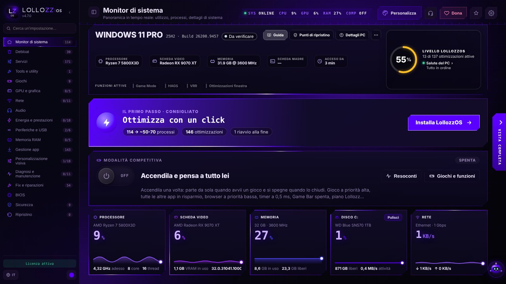
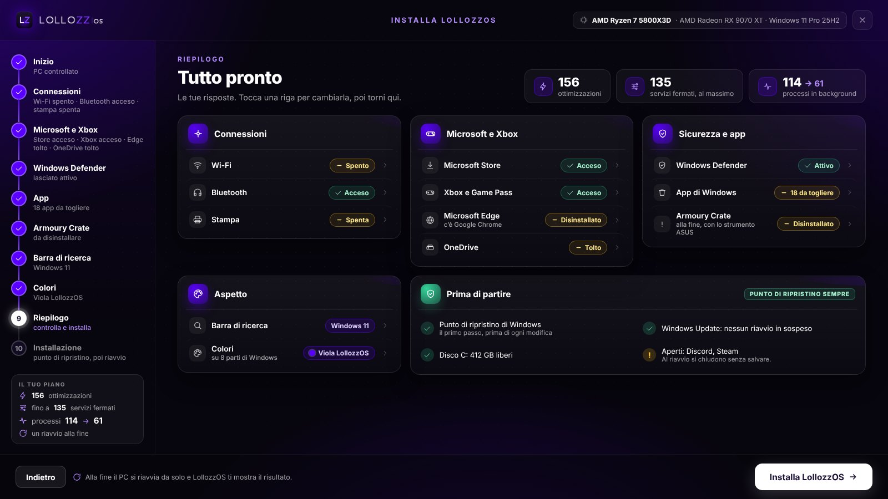
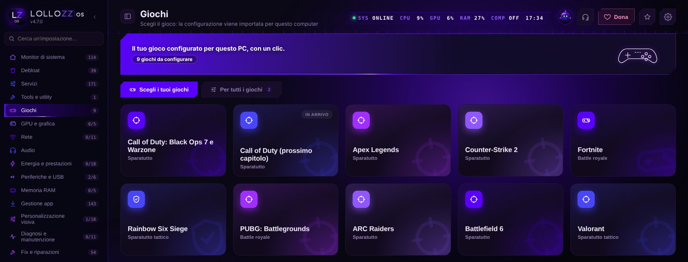

Novità
Aggiornato al 14 ottobre 2026
L'app controlla da sola gli aggiornamenti: quando esce una versione nuova te lo dice, la scarica e apre l'installazione. Licenza, impostazioni e backup restano.
- Installa LollozzOS, un percorso soloRispondi a poche domande e le ottimizzazioni partono tutte insieme, con il punto di ripristino come primo passo.
- Quello che usi resta accesoWi-Fi collegato, Bluetooth con dispositivi associati e stampanti installate non si spengono. Se tieni Xbox, lo Store continua ad aggiornare i giochi di Game Pass.
- Si spengono solo i driver inutiliLollozzOS guarda i dispositivi del tuo PC e lascia attivo ogni driver che usano, compresi quelli dei dischi.
- Windows Defender, scelto con i numeriQuanto pesa davvero, dai test indipendenti: nei giochi nessun calo di FPS misurabile. Il consiglio è lasciarlo attivo; se lo spegni, lo decidi tu.
- Edge si toglie solo se hai un altro browserSe scegli di toglierlo, LollozzOS scarica prima Chrome, Firefox o Brave dal sito ufficiale.
- Sui portatili la batteria contaRestano fuori le ottimizzazioni che la consumano.
Poche domande, poi fa tutto da solo.
Connessioni, Microsoft e Xbox, Windows Defender, app, barra di ricerca e colori: dalle tue risposte nasce il piano per il tuo PC. Servizi, debloat, rete, energia e aspetto partono insieme.

- RispondiAl massimo otto domande, con la risposta consigliata già segnata.
- Controlla il riepilogoTocchi una risposta, la cambi e torni al riepilogo.
- RiavviaIl PC si riavvia da solo e LollozzOS ti mostra processi e servizi, prima e dopo.
Si accende con il gioco.
La accendi una volta e non devi fare altro: parte quando avvii un gioco e si spegne quando lo chiudi, anche con LollozzOS chiusa e dopo il riavvio.
- Funziona con qualunque launcher: Steam, Battle.net, Epic, Riot, Ubisoft, EA, Xbox.
- Il gioco a priorità alta su tutti i core, sulla scheda video più potente.
- Le altre app in risparmio: Discord, OBS e i programmi di mouse e cuffie restano aperti e funzionano.
- Browser a priorità bassa, senza perdere le schede.
- Timer di Windows a 0,5 ms, mouse senza accelerazione, piano energetico Lollozz Gaming.
- Game Bar spenta, servizi che non servono in pausa, niente notifiche.
- Quando chiudi il gioco, tutto torna com'era.
- A fine partita il resoconto: FPS medi, 1% low e scatti.
Non mette mai in risparmio i processi di Windows, Microsoft Defender, gli anti-cheat, l'audio, i driver video e i programmi che rimappano tastiera e controller. FPS e scatti li misura PresentMon di Intel, che non disegna niente sullo schermo.
Ogni parte di Windows che conta per giocare.
Ogni interruttore legge lo stato vero dal sistema: vedi quello che Windows sta facendo, non quello che speri.
- DebloatVia la telemetria, l'IA e le funzioni di Windows che non usi.
- ServiziI servizi che Windows tiene accesi in sottofondo: spegni solo quelli che non ti servono.
- ReteMeno ritardo in gioco: DNS, scheda di rete e impostazioni di Windows.
- GPU e graficaLa scheda video al massimo: driver, preset e impostazioni grafiche di Windows.
- Energia e prestazioniTutta la potenza quando serve: piano energetico, processore, USB e PCIe.
- Memoria RAMCome Windows usa la memoria: SuperFetch, Prefetch e gestione della RAM.
- Periferiche e USBTastiera, mouse e porte USB: reattività, interrupt e misure dei dispositivi.
- AudioAudio senza effetti che ritardano e senza il volume che si abbassa da solo.
- BIOSIl BIOS controllato da Windows: sicurezza, memoria, scheda video e firmware.
- Fix e riparazioniQualcosa non va? Scegli il problema e LollozzOS lo ripara: 54 riparazioni in 11 gruppi.
- SicurezzaLe protezioni di Windows, con il costo in prestazioni e il rischio scritti su ogni voce.
- LIAL'assistente di LollozzOS: analizza il PC, ti guida nell'app e scrive la guida del tuo computer.
Configurazioni pronte, fatte sul tuo PC.
Il file tarato da Lollozz, importato con un clic. Dove serve, i valori si ricalcolano sul tuo processore, schermo e scheda video. Prima si salva il tuo file, e «Rimetti com'erano» lo riporta indietro.

- Call of Duty: Black Ops 7 e Warzone
- Apex Legends
- Counter-Strike 2
- Fortnite
- Rainbow Six Siege
- PUBG: Battlegrounds
- ARC Raiders
- Battlefield 6
- Valorant
- Call of Duty, prossimo capitolo (in arrivo)
Tutto si annulla.
Ogni ottimizzazione è scritta come dati: il valore quando è accesa e quello quando è spenta. Gli stessi dati servono ad applicarla, ad annullarla e a leggere com'è davvero.
- Prima di ogni modifica, i valori di primaSpegni l'interruttore e torna com'era.
- Il punto di ripristino viene prima di tuttoÈ il primo passo di Installa LollozzOS. I punti di ripristino di Windows li crei e li usi anche dall'app.
- Le protezioni di Windows non si toccano per sbaglioStanno nella sezione Sicurezza: ognuna dice quanto costa in prestazioni, chiede conferma e fa prima un punto di ripristino.
- «Ripristina tutto»Annulla ogni modifica dell'app, o una alla volta dalla cronologia. Non riporta le app e i file eliminati, né tema, sfondo e colore.
- Windows Update prima di tuttoSe Windows ha un aggiornamento da completare, LollozzOS aspetta prima di cambiare qualcosa.
Pronto in tre passi.
Una licenza, tutta l'app, su un computer. È legata al suo hardware: non si rivende, non si condivide e non si trasferisce. Prezzi e dettagli su Discord.
- Scarica e installaScarica LollozzOS_Setup e avvialo. Il programma d'installazione non è firmato: se Windows SmartScreen avvisa, scegli «Ulteriori informazioni» e poi «Esegui comunque».
- Provalo per 24 oreLa prova gratuita vale una volta per computer: chiede nome e cognome, email e telefono. Comincia da Installa LollozzOS nella Home.
- Attiva la licenzaNell'app copia la richiesta di licenza, scrivi su Discord e incolla il codice di sblocco che ricevi.
Prima di scaricare.
Le risposte alle domande che arrivano più spesso su Discord.
È sicuro per il mio PC?
Prima di ogni modifica LollozzOS salva i valori di prima, e il punto di ripristino di Windows è il primo passo di Installa LollozzOS. Ogni interruttore si rispegne, e «Ripristina tutto» annulla ogni modifica fatta dall'app.
Su quale Windows funziona?
Windows 10 e Windows 11, 64 bit. L'app parte come amministratore, perché cambia impostazioni di sistema.
In che lingua è l'app?
Italiano e inglese: segue la lingua di Windows, e la cambi quando vuoi dal globo in basso a sinistra.
La Modalità competitiva rallenta il PC quando non gioco?
No. Aspetta un gioco senza fare niente; quando parte cambia le priorità solo per quella partita, e quando lo chiudi torna tutto com'era. Se passi a un'altra finestra (Alt+Tab) le app tornano normali finché non torni nel gioco.
Dopo un aggiornamento di Windows devo rifare tutto?
Solo se serve: il Livello LollozzOS nella Home controlla il PC, e se Windows ha rimesso qualcosa il Livello scende e l'app te lo propone di nuovo.
Windows dice che il programma non è riconosciuto. Cosa faccio?
Il programma d'installazione non è firmato, quindi Windows SmartScreen può avvisare la prima volta. Clicca «Ulteriori informazioni» e poi «Esegui comunque». Scaricalo solo da questa pagina o dal GitHub di LollozzOS.
Entra nella community.
Assistenza, licenze, novità e la community italiana del gaming competitivo che prova e migliora LollozzOS.
Sostieni LollozzOS.
Se LollozzOS ti è utile, una donazione libera sostiene i prossimi aggiornamenti. Non sblocca niente: la licenza resta la stessa.
Dona con Ko-fiIl tuo PC, pronto per giocare.
Scaricalo, provalo per 24 ore e guarda la differenza sul tuo PC.